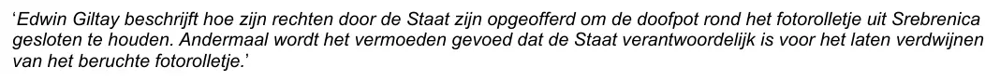

Bewijsstuk · E-mail
Aanbeveling van de advocaten van de Moeders van Srebrenica, 17 februari 2015
De passage
“Edwin Giltay beschrijft hoe zijn rechten door de Staat zijn opgeofferd om de doofpot rond het fotorolletje uit Srebrenica gesloten te houden. Andermaal wordt het vermoeden gevoed dat de Staat verantwoordelijk is voor het laten verdwijnen van het beruchte fotorolletje.” Pagina 1, de drie regels van de quote zelf, cursief in de tekst van het bericht. Het bericht zet de quote tussen enkele aanhalingstekens; hier staan dubbele. De drie regels lopen door als één alinea. Direct erboven kondigt de schrijver met de woorden ‘Zoals toegezegd’ de quote aan. Die is bedoeld voor de promotie van het boek van Edwin Giltay.

Waarom dit document telt
In juli 2015 haalden de Moeders van Srebrenica De doofpotgeneraal aan in hun memorie van grieven tegen de Nederlandse Staat. Hun advocaten volgden het boek vanaf het begin. Vijf maanden eerder steunden zij het al schriftelijk, in dit bericht. Marco Gerritsen stuurde daarin de quote die hij voor de promotie van het boek had beloofd, noemde hem ‘onze quote’ en ondertekende hem samen met Simon van der Sluijs, als advocaten van de Moeders van Srebrenica. De woorden die de stemmensectie onder hun namen toont, komen uit deze e-mail.
Herkomst
- Document
- E-mail, één pagina, op 24 juli 2026 geprint uit Gmail
- Van
- Marco R. Gerritsen, advocaat, Van Diepen Van der Kroef Advocaten, Kenaupark 21, Haarlem
- Aan
- Coen Borgman, directeur en uitgever van SpeakEasy Publisher & Agency, in het bericht aangesproken als ‘Beste Coen’
- Cc
- Simon van der Sluijs en Edwin Giltay
- Datum
- 17 februari 2015, 14:47 uur
- Onderwerp
- ‘Quote ivm De Doofpotgeneraal’
- Doel
- De begeleidende regel zegt dat de quote zoals beloofd wordt gestuurd, voor de promotie van het boek van Edwin Giltay
- Ondertekend
- Marco R. Gerritsen en Simon van der Sluijs, boven de regel ‘Advocaten van de “Moeders van Srebrenica”’
- Bijlage
- vandiepen.jpg, 22K, het kantoorlogo, dat in de ondertekening van de print niet is geladen maar onderaan de pagina als miniatuur wel te zien is
- Taal
- Nederlands, met de standaarddisclaimer van het kantoor in het Nederlands en Engels
- Pagina’s
- 1
- Berust bij
- Archief van de auteur, die het bericht in cc ontving
- Zie ook
- Moeders van Srebrenica, memorie van grieven, 7 juli 2015
Aangehaald in:
- het essay ‘Het verbod viel, het boek bleef overeind’ in het hoofdstuk (5) ‘Meer dan een verboden boek’
- de stemmensectie.
Document: https://
Laatst gewijzigd 26 juli 2026, geraadpleegd 3 oktober 2026.

Deze pagina is een bewijsstuk bij het boek De doofpotgeneraal van Edwin Giltay en de bijbehorende website.